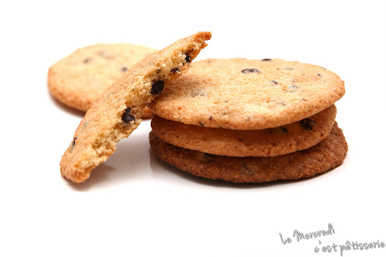

Recette de cookies
Recette pour 6 personnes !

Ingrédients:
- 1 Oeuf
- 85g de sucre
- 85 de beurre
- 150g de farine
- 100g de pépites de chocolat
- 1 sachet de sucre vanillé
- 1 cuillère à café de levure chimique
- 1/2 cuillère à café de sel
Préparation:
- Laisser ramollir le beurre à basse température ambiante. Dans un saladier, malaxer le avec le sucre.
- Ajouter l'oeuf et éventuellement le sucre vanillé.
- Verser progressivement la farine, la levure chimique, le sel et les pépites de chocolat. Mélangez bien.
- Beurrez une plauque allant au four ou recouvrez-la d'une plaque de silicone. A l'aide de deux cuillères à soupe ou simplement avec les mains, formez des noix de pâte en les éspaçant car elles s'étaletont à la cuison.
- Faites cuire 8 à 10 minutes à 180°C soit thermostat 6. Il faut les sortir dès que les contours commencent à brunir.